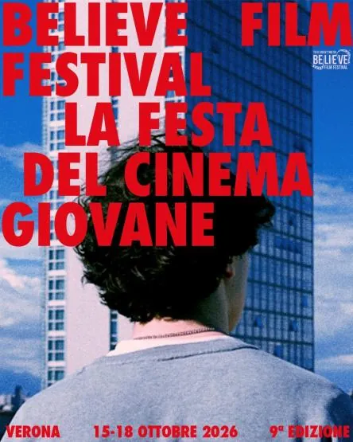

da gio 15 ott a dom 18 ott
Believe Film Fest
finalisti della nona edizione del Believe Film Festival
 Indicazioni
Indicazioni
- Costi e prenotazioni
- Costo non indicato · Prenotazione non indicata
- Programma
- Programma da verificare. Apri la fonte ufficiale per orari e possibili aggiornamenti.
- In caso di maltempo
- Nessuna indicazione specifica pubblicata.
- Note
- Acquisito automaticamente dalla fonte.
L’EVENTO
Descrizione completa
finalisti della nona edizione del Believe Film Festival
, il primo festival italiano interamente dedicato ai cortometraggi realizzati da autori e crew tra i
Verona dal 15 al 18 ottobre 2026
Nato nel 2018 e organizzato dall’
, il Believe Film Festival, diretto da
, si conferma un appuntamento pensato e costruito dai giovani per i giovani, con l’obiettivo di offrire alle nuove generazioni di filmmaker uno spazio concreto per raccontarsi attraverso il cinema, incontrare altri autori e confrontarsi con professionisti del settore.
La nona edizione porta sul grande schermo
Selezione Ufficiale, Sezione Esordienti, Believe Extra e Fuori Concorso
, con autori e crew provenienti da diverse regioni italiane e una selezione che attraversa generi, linguaggi e temi differenti: dalla crescita personale alle relazioni, dal disagio adolescenziale alla memoria, dall'amicizia alla paura del futuro, fino alla sperimentazione e alla commedia.
propone sei cortometraggi. In
, Fabio raggiunge un hotel su un’isola per incontrare per la prima volta una ragazza conosciuta online e di cui si è innamorato, ma una serie di imprevisti complica il suo incontro con lei.
Alessandro Borghi, Alexander Caproni di Taliedo e Nicola Scaramella
, ripercorre invece la storia dell’amicizia tra due giovani russi, attraverso i ricordi e le esperienze che ne hanno segnato il rapporto.
Il tema della perdita è al centro di
Matteo Franchini e Giorgia Salotti
, dove Sofia, mentre scrive l’elogio funebre del nonno, trova nei ricordi e nei luoghi che lui custodiva la forza per affrontare un lutto reso ancora più doloroso da una verità rimasta nascosta. In
, Jack si trova invece a fare i conti con la fine di una relazione e con l’incapacità di lasciarsi alle spalle Cloe, mentre gli amici cercano di aiutarlo a uscire dal suo stato di immobilità.
Più serrato e costruito sul confronto tra due personaggi è
, ambientato quasi interamente in macchina, dove Roberto vuole sapere cosa sia successo a Matteo, che non sembra intenzionato a raccontarglielo. Chiude la sezione
, storia di due giovani attori ed ex amanti che, rimasti chiusi fuori da un teatro pochi minuti prima dello spettacolo, sono costretti ad affrontare ciò che è rimasto in sospeso tra loro.
, dedicata ai cortometraggi realizzati da autori tra i 14 e i 18 anni, riunisce sei lavori che guardano in particolare al mondo dell’adolescenza. In
, sei adolescenti cercano di nascondere il proprio dolore dietro una frase apparentemente rassicurante: “Va tutto bene”.
racconta invece l’incontro tra Anna, sedicenne solitaria e in difficoltà a scuola, e Amelia, una ragazza dal sorriso contagioso che porta con sé un mistero. Durante la serata dedicata agli esordienti sarà, inoltre, presentato in anteprima il cortometraggio "Alle 17:00" realizzato nell'ambito della prima edizione del Premio Fondazione Cattolica.
Il senso di colpa dopo una perdita è al centro di
, nel quale Alice continua a rivivere l’ultima cena con Luca, chiedendosi se avrebbe potuto fare qualcosa per salvarlo. In
, un adolescente prova a trasformare in parole, davanti allo schermo del computer, le proprie riflessioni sull’esistenza e sul futuro.
segue tre ragazze sui calanchi, alle prese con una decisione drastica e con un confronto fatto di ironia, paure e fragilità. Infine,
Uscito a riveder le stelle
racconta la solitudine di Dante, appena arrivato alle scuole medie e già alle prese con incomprensioni, bullismo e l’assenza del padre, fino a un possibile incontro capace di cambiare il suo modo di guardare se stesso.
Otto sono invece i cortometraggi della
, dedicata alle opere che sperimentano con generi e linguaggi e propongono approcci originali a temi vicini alle nuove generazioni.
porta lo spettatore nella campagna veneta durante il tradizionale Panevin, dove una coppia di giovani contadini si confronta con il tema della sterilità mentre il rito del fuoco assume una dimensione sempre più misteriosa.
ci troviamo nel 2087, in un’umanità ormai prossima all’estinzione, dove gli unici uomini rimasti sono un anziano smemorato e un ragazzo nato durante l’apocalisse.
Esistenzialismo da giardino
Davide Callegari, Giulia Cantarella, Matilde Dri, Denise Pattarello e Riccardo Penzo
, affronta invece con ironia la paura del futuro e quella difficoltà a compiere il primo passo quando ci si trova davanti a qualcosa che sembra insormontabile.
Giovanni Morganti e Matteo Scapin
racconta la ricerca di una nuova casa da parte di un uomo ormai vicino alla morte per la sua amata piantina, mentre
conduce nel cuore della Sardegna, attraverso il rito dei Mamuthones, tra memoria, tradizione, trance collettiva e dimensione ancestrale.
trasforma invece una cena nella Roma elegante di casa Tiberi in un confronto con vecchie abitudini e ipocrisie di classe.
sceglie la commedia per raccontare una possibile svolta nella routine della vita d’ufficio, nascosta dietro una misteriosa porta del bagno. Chiude la sezione
, storia di Rocco e Vito, due uomini impegnati a difendere la propria immagine da “duri” e costretti a confrontarsi quando scoprono l’uno il segreto dell’altro.
A completare il programma sono i quattro titoli
, realizzati da giovanissimi autori con le proprie crew. In
, Elena, rimasta sola in un appartamento ancora da completare, si trova ad affrontare il peso di un futuro che improvvisamente sembra non arrivare più.
racconta invece le difficoltà di un ragazzo impegnato a realizzare da solo un cortometraggio in casa, fino all’intervento di una strana entità che lo aiuterà a capire dove sta davvero sbagliando.
Matteo Cesari e Carla Maria Parisi
mette al centro l’incontro notturno tra Stella, lasciata dal fidanzato in un drive-in, e Noemi, la cameriera che inizialmente la giudica con severità ma finisce per scoprirne una fragilità inattesa. Infine,
segue Irene, quindicenne alle prese con rabbia e fragilità adolescenziali, fino all’incontro misterioso che le permetterà di iniziare a guardare oltre ciò che appare.
“Ogni anno arrivano storie e sguardi diversi, ma quello che continua a sorprenderci è la voglia dei ragazzi di mettersi in gioco e di trovare nel cinema uno strumento per raccontare ciò che vivono e ciò che li circonda”
– raccontano gli organizzatori del Believe Film Festival –.
“La selezione di quest’anno restituisce proprio questa varietà: ci sono storie intime, racconti generazionali, sperimentazioni, commedie, drammi e linguaggi molto diversi. Il nostro compito è creare lo spazio perché questi lavori possano essere visti, discussi e soprattutto perché i loro autori possano incontrarsi e creare nuove connessioni.”
uno degli elementi centrali del Believe Film Festival. Durante i giorni della manifestazione, accanto alle proiezioni sono previsti
speed meetings, workshop, masterclass, incontri con professionisti, momenti di confronto ed eventi speciali
, per favorire il dialogo tra i giovani autori e il mondo professionale.
Una dimensione che il Believe porta avanti anche attraverso la
, la piattaforma del Festival che permette alla community di entrare in contatto e che si arricchisce di nuove funzionalità dedicate proprio al networking. L’obiettivo è trasformare gli incontri nati durante il Festival in relazioni che possano continuare anche oltre i quattro giorni della manifestazione.
A rafforzare le opportunità offerte ai giovani autori è inoltre la partnership con
. I cortometraggi vincitori dei
, assegnati dagli spettatori in sala e collegati in diretta streaming, avranno infatti la possibilità di essere pubblicati su Rai Cinema Channel nei tre mesi successivi al Festival, offrendo alle opere e ai loro autori un'ulteriore occasione di visibilità e di incontro con il pubblico. Inoltre, saranno proiettati durante il festival alcuni cortometraggi di
, il progetto di Rai Cinema dedicato alla valorizzazione dei giovani autori e dei linguaggi emergenti, realizzato in collaborazione con il mondo delle Università e scuole di cinema italiane.
La collaborazione con Rai Cinema Channel rappresenta uno degli aspetti del percorso del Believe che va oltre la semplice competizione: il Festival vuole infatti offrire ai giovani filmmaker non soltanto un palcoscenico per presentare il proprio lavoro, ma anche occasioni di confronto, formazione, networking e visibilità.
I cortometraggi finalisti saranno protagonisti delle proiezioni e degli appuntamenti della
nona edizione del Believe Film Festival
, in programma a Verona dal
. Il programma comprenderà workshop, masterclass, incontri con ospiti ed esperti, momenti di networking, eventi speciali e la tradizionale serata finale con red carpet e premiazioni.
Il Believe Film Festival si prepara così a tornare a Verona con una nuova generazione di giovani cineasti, portando sul grande schermo storie e punti di vista diversi ma accomunati dalla volontà di utilizzare il cinema come strumento di espressione, confronto e relazione.
BELIEVE FILM FESTIVAL – NONA EDIZIONE
Verona, 15-18 ottobre 2026
www.believefilmfestival.it
https://www.believefilmfestival.it/partecipa/accrediti/
IL PROGRAMMA
Programma e orari
Appuntamenti raccolti dalle fonti elencate. Dove manca un orario, non è ancora disponibile in questa scheda.
Programma pubblicato
- Dal 2026-10-15 al 2026-10-18
INFORMAZIONI UTILI
Prima di partire
- Controllare la fonte prima di partire.
ORGANIZZAZIONE